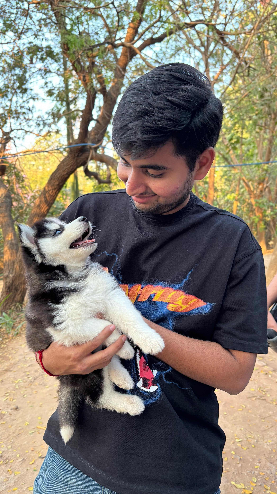

MS Computer Science, University of Colorado Boulder
Email: vishwasvkothari@gmail.com
About
I'm Vishwas, a computer science master's student at CU Boulder. Short version: I do machine learning, and I don't fully trust it. The part I actually enjoy is not just getting a model to work. It is finding the exact spot where it quietly falls apart, and then figuring out why.
That is the theme across pretty much everything I build: document AI, explainability, trustworthy ML, and the occasional optimizer mystery. Less "look how high the score is," more "okay, but does this hold up when nobody's watching?"
Before Boulder, I was at ISRO pulling chlorophyll-a estimates out of satellite data and checking them against real ocean samples until the numbers behaved. Excellent training for being suspicious of nice-looking results.
Outside of all that, you will usually find me trying to convince myself that walking counts as a hobby, or deep in philosophy books that are far more pessimistic than I actually am. It balances out.
Projects and Research
2026FinAgent-Eval is an evaluation framework I built to test how well generative AI models understand real financial documents. The goal was not only to measure model accuracy, but to understand where models fail when answering questions from financial reports, tables, layouts, charts, and numerical content. I created an automated evaluation pipeline around 397 financial-document questions drawn from 79 document images across 10 companies. The system benchmarked 5 generative AI models across extractive, numerical, layout-based, and chart-related questions. A key finding was that headline accuracy can hide serious reliability issues: one model performed reasonably overall but collapsed on numerical reasoning.
Includes automated tests, bootstrap confidence intervals, structured reports, a failure-mode taxonomy, and a Streamlit dashboard. Tech stack: Python, PyTorch, Hugging Face, Qwen2.5-VL, Streamlit, Pandas, statistical evaluation, LLM evaluation, VLMs.This project evaluates how vision-language models perform on real-world financial documents. I built it because many document AI models look strong on clean benchmarks but struggle with dense tables, scanned layouts, financial terminology, and numerical reasoning. I created a dataset of 397 question-answer pairs across 79 financial-document images from 10 companies, then benchmarked multiple deep learning and vision-language architectures. The results showed a 63 to 83 percent performance gap between cleaner benchmark-style tasks and real business-document understanding. I also experimented with LoRA fine-tuning using 307 curated financial QA examples. The fine-tuned model improved from 0.137 to 0.168 ANLS, a roughly 22 percent gain.
Tech stack: Python, PyTorch, Hugging Face, LayoutLMv3, Pix2Struct, LoRA, OCR, Document AI, Visual Question Answering.XAI Credit Lens is an explainable machine-learning application for credit-risk prediction. The project combines predictive modeling with interpretability tools so users can understand not only what a model predicted, but why it made that decision. I trained and evaluated multiple models on a 30,000-record credit dataset, including XGBoost, LightGBM, and Random Forest. The pipeline used Optuna hyperparameter tuning and 5-fold cross-validation, with the final system achieving a test ROC-AUC of 0.782. I integrated SHAP, LIME, and DiCE explanations, and added a fairness audit across 4 protected or sensitive attributes, with zero violations detected in the tested setup.
Tech stack: Python, Scikit-learn, XGBoost, LightGBM, Random Forest, Optuna, SHAP, LIME, DiCE, Streamlit.This project investigated how optimizer choice affects the behavior of machine-learning models. Instead of treating Adam and SGD as interchangeable training tools, I studied how each optimizer can guide models toward different solutions, even when trained on the same data. I reproduced theoretical optimizer-bias behavior in controlled experiments: gradient descent aligned with L2 max-margin behavior, while Adam aligned more closely with L-infinity style solutions. I then extended the analysis to MNIST experiments with spurious patch features to study shortcut learning and generalization. Optimizer choice changed out-of-distribution behavior, with SGD showing a 30.2 percent OOD drop and Adam showing a 13.6 percent drop in the tested setting.
Tech stack: Python, PyTorch, NumPy, Matplotlib, Optimization, SGD, Adam, MNIST, Robustness, Generalization Analysis.Experience
At the Space Applications Centre, ISRO, I worked on ocean-colour remote sensing for retrieving and validating chlorophyll-a concentration from satellite observations. My work focused on building scientific computing workflows that connected satellite data processing, numerical optimization, and model validation.
I developed Python-based data pipelines to ingest, clean, collocate, and analyze satellite products from sensors such as MODIS Aqua and OCM. The workflow converted raw and intermediate satellite observations into analysis-ready datasets using NumPy, Pandas, xarray, NetCDF, SNAP, and Snappy. A major part of the project involved implementing a Levenberg-Marquardt optimization approach for ocean-colour parameter retrieval and validating results against reference datasets such as NASA NOMAD.
The final retrieval workflow was evaluated using scientific metrics including RMSE, MAPD, relative bias, and R2. The model achieved an R2 of 0.987 for remote-sensing reflectance reconstruction, and chlorophyll-a validation reached an R2 of 0.879 in log-space across 105 matched samples. I also prepared a detailed technical report documenting the methodology, data flow, validation approach, and results.
Tech stack: Python, NumPy, Pandas, xarray, NetCDF, SNAP, Snappy, MODIS Aqua, OCM, NASA NOMAD, Matplotlib.Education
- MS, Computer Science, University of Colorado Boulder. 2025 to 2027. GPA 3.74 / 4.0.
- B.Tech, Information Technology, Vellore Institute of Technology. 2021 to 2025. GPA 3.4 / 4.0.
Recognition
- AWS Certified Cloud Practitioner. Score: 970 / 1000.
- Springer book chapter, 2025: Kothari, V., and Krishwanth, B. Ethical AI for countering violence against women. DOI
- Elsevier reviewer for Public Health and Social Sciences & Humanities Open. Reviewing since 2026.
Skills
- LanguagesPython, SQL, Java, C / C++, JavaScript
- ML / DLPyTorch, scikit-learn, XGBoost, LightGBM, Hugging Face Transformers, LoRA / PEFT
- EvaluationBootstrap confidence intervals, LLM evaluation, failure taxonomies, pytest, Optuna
- XAI / FairnessSHAP, LIME, DiCE, fairness auditing, counterfactual explanations
- DataNumPy, Pandas, SciPy, xarray, NetCDF, OpenCV, MySQL, MongoDB
- ToolingGit, Linux, AWS, Streamlit, Gradio
Contact
Let's talk about reliable AI.
Open to full-time roles in machine learning engineering, applied AI, data science, and model evaluation, especially on teams that care about evidence, reliability, and real-world behavior.